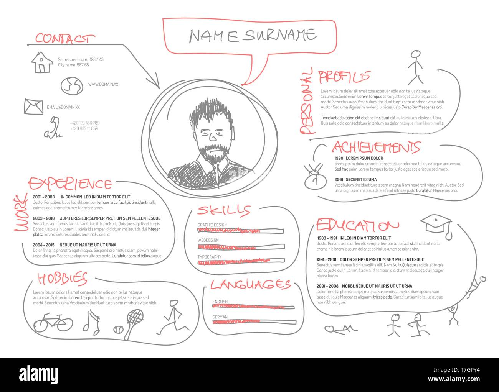

Trusted by job seekers targeting top companies


Get instant, brutally honest feedback on your resume — before the recruiter does.
Check Now →
HireLens uses advanced AI to analyze every section of your resume — structure, keywords, tone, and relevance — giving you actionable insights in seconds.
Replace with your MP4
your-video-1.mp4
Replace with your MP4
your-video-2.mp4
Get a clear score, prioritized fixes, and rewrite suggestions — so you spend less time guessing and more time landing interviews.
Trusted by job seekers targeting top companies
One platform for your resume, your cover letter, and your online presence
See exactly how applicant tracking systems read your resume, scored out of 100 with section-by-section detail.
Generate a cover letter tailored to your resume and the role you're applying for, ready in one click.
Get feedback on your GitHub activity and LinkedIn profile so your online presence backs up your resume.
Find the skills and terms missing from your resume for the role you're targeting
Find the skills and terms missing from your resume for the role you're targeting
Find the skills and terms missing from your resume for the role you're targeting
Three simple steps stand between you and a stronger resume
Upload your PDF resume instantly. No registration required.
ATS analysis, keyword matching, structure evaluation and recruiter insights.
Receive a detailed score, fixes, and actionable improvement suggestions.
Thousands of resumes analyzed, reviewed, and improved with AI-powered insights.